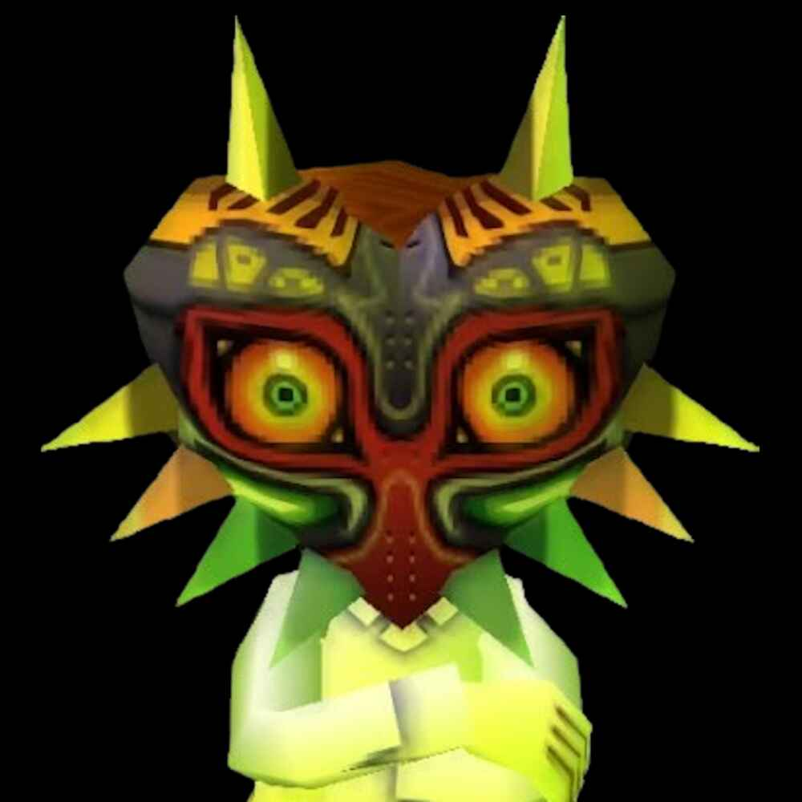

shinrei
Member since July 22, 2025 •
Biography
Shinrei is an experimental musician based in Detroit, Michigan, creating musical amalgamations mainly within the genres of Post-Industrial, Glitch, and Experimental Hip-Hop. They serve as the Assistant Manager (as of November 9th, 2025) and the Creative Director for RAINOUT.
Influenced by infamous artists and bands such as Yves Tumor, heroine, Death Grips, and Tim Hecker, Shinrei is known for creating uniquely whilst blending his inspirations together into one coherent yet eclectic sound.
They have been making music since they were 13 years old on BandLab, eventually moving to FL Studio by the age of 14.